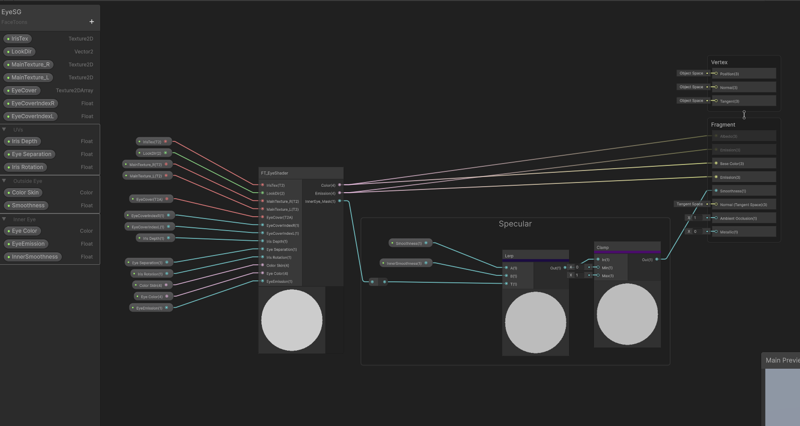
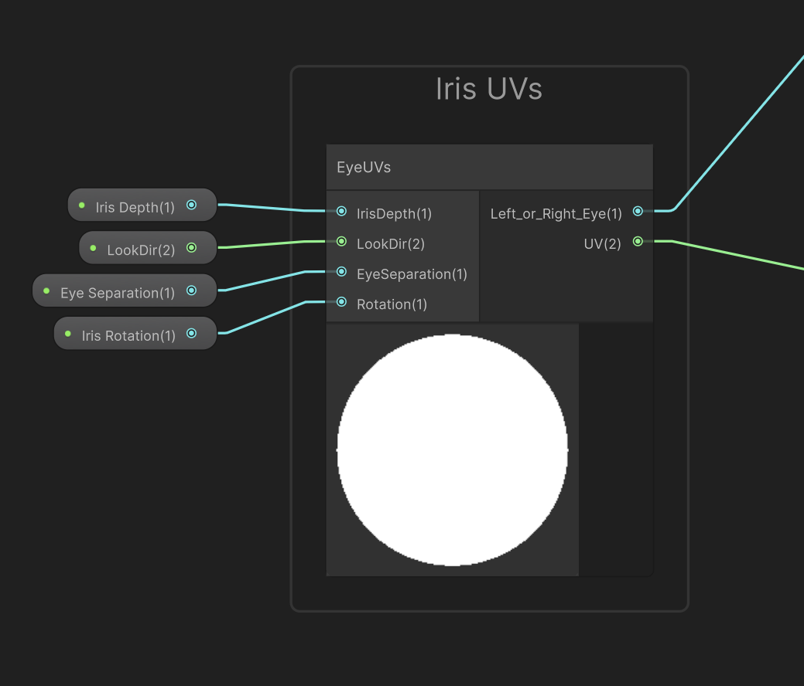

Extending FaceToons for Blend-shapes, Custom Frames, Logic or Shaders
Some workflows might require having more data associated with frames such as BlendShape values, more textures for custom shaders or any kind of data/logic. This is supported by FaceToons and is, in fact, the way Multi-Angle Mouth workflow was done.
Extending Frames
- Inherit from
FT_FrameMouth/FT_FrameMouthMA, or Eye Frame's equivalent (recommended) or inheritFT_FrameBase(super advanced). - Include any additional data, variables or logic needed.
- Override the
public Texture2D[] GetTextures(). This method MUST return all textures used by the frame. - Ensure that textures which are solely used in a TextureArray are excluded from build using #if UNITY_EDITOR.
When in doubt, check the documented source code implementation of
FT_FrameMouthMAto see a customized frame.
public class FT_EyeCoverFrame : FT_FrameBase
{
// Prevents this texture from being included in builds.
#if UNITY_EDITOR
public Texture2D texture;
#endif
public override Texture2D[] GetTextures()
{
#if UNITY_EDITOR
return new Texture2D[] { texture };
#else
return new Texture2D[] { };
#endif
}
}
Creating Collections
Inherit from
FT_FrameCollectionBase<T>
ReplaceTwith your Frame type.Override
CollectFramesEditor()
Implementpublic List<Texture2D> CollectFramesEditor()(Editor-only). This method should iterate over your frames and collect textures to be packed into aTextureArray.
Note: The order of
CollectFramesEditor()is crucial since it determines how textures are addressed during runtime. The first texture is used for generating asset previews in the Editor.
Example Texture Packing for MouthDoubleCollection
Assuming i is the index of a frame in the collection:
[i * 2]- Mouth Color Texture (Front)[i * 2 + 1]- Mouth Color Texture (Side)
Customizing Mouth Animators/Renderers
Extend an Existing Mouth Animator
Inherit from a provided implementation likeMouthAnimatorSingle, or create one from scratch usingMouthAnimatorBase<T>whereTis your Frame type.Implement Frame Application Logic
Override and customize thepublic void SetSpriteIndex(int index)method for your use case.Optional: Create a Custom Renderer
If additional rendering functionality is needed, create a script that implementsIMouthRenderer.
Tip: Refer to the source code of
MouthAnimatorSingleorMouthAnimatorDoubleas a starting point for understanding the implementation.
Custom Eye Shaders
FaceToons’ Eye Shader is built using ShaderGraph subgraphs for flexibility and customization:
EyeUVs Subgraph
Handles UV mapping for the Iris layer, enabling features like iris movement, mirroring, and cross-eyed effects.FT_EyeShader Subgraph
Manages the construction and blending process for the entire eye.
Extending FT_EyeShader
The FT_EyeShader subgraph includes a eye mask map (0: Skin, 1: Inner Eye)
You can leverage this mask to apply custom effects like specular, occlusion, metallic, or other textures without modifying the base shader.

In this example, the Specular field was added using FT_EyeShader without altering the original graph.
Creating a Custom Eye Shader
FaceToons supports any shader that adheres to the expected input naming conventions. For convenience, you can integrate the EyeUVs subgraph to bypass manual handling of features like iris angling, looking around, mirroring, and cross-eyed effects.

The EyeUVs node simplifies iris transformations, saving time and reducing complexity.